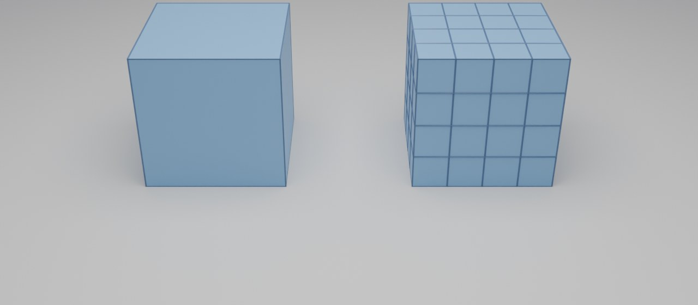

Bonus lesson
Loop Cut
A cube has eight corners and nothing between them. You cannot bend it, pinch its middle or round one side, because there are no vertices to move. The Loop Cut tool fixes that: it splits a loop of faces by inserting a new edge loop all the way around the mesh, giving you geometry exactly where you need it. You already met it as Ctrl+R when the Curve modifier needed a bendable beam.
1. What it adds
Each cut inserts one new edge loop that intersects the edges of a face loop and follows it around the model. The manual notes that the new loop stops at poles, meaning triangles and n-gons, where the face loop ends, which is why clean four-sided faces matter for predictable cuts. More loops mean more control points: a beam needs loops along its length to bend, and a Subdivision Surface needs loops near an edge to keep that edge tight.

2. The two-step workflow
In Edit Mode, press Ctrl+R (or pick Loop Cut from the Toolbar). The tool works in two steps, as the manual describes. First, move the cursor over an edge: a magenta line previews where the cut will go, and it jumps as you move across different edges so you can choose the direction. Second, click LMB to make the cut. You can then slide the loop along the surface to position it, and click again to place it.
3. Settings and options
While the preview is up, the Number of Cuts setting (the mouse wheel works here) adds more cuts at once; the manual notes they are spread uniformly across the face loop and you cannot position them individually. Correct UVs adjusts the UV coordinates so an image texture does not warp across the new edges. After you confirm, the Loop Cut and Slide options become available in the Adjust Last Operation panel.
Read the manual page on Loop Cut.
Exercise
Add a cube and go into Edit Mode. Press Ctrl+R and hover over different edges until the preview runs vertically, then scroll to 3 cuts and click. Switch to face select, pick a center ring of faces, and scale it out: you have made a knob shape from a cube in a minute. Try the same on a model with a triangular face and watch where the preview loop stops.